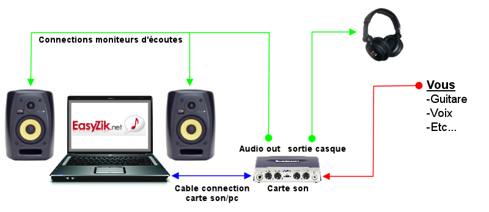

La musique assistée par ordinateur (MAO)
-
Ma Veille Technologique se fera sur la musique assistée par ordinateur car c'est un domaine qui allie deux de mes passions
Qu'est ce que le MAO ?
"MAO" est l’acronyme de Musique Assistée par Ordinateur. On parle de MAO lorsque dans le proccesssus de composition on a recours à l’ordinateur.
La toute première « musique » à être crée avec un ordinateur est en fait un medley de trois chansons différentes : « God Save The King », hymne nationale anglaise de l’époque (1901-1952), « Baa Baa Black Sheep », une comptine pour enfant, et de « In The Mood », un classique du jazz par Glenn Miller. Cette « chanson » a été créée en 1951 par une machine nommée « Baby », qui se trouvait dans le laboratoire du mathématicien Alan Turing. Ce morceau avait pour but de tester les capacités de la machine. Cette machine a été conçue en 1948 et le programme qui a servi à créer ce medley a été imaginé par Christopher Strachey, l’un des plus grands informaticiens britanniques de l’époque1. C’est comme ça que la MAO a commencé. Les recherches sur la composition assistée par ordinateur remontent à 1955, et débouchèrent en 1956 sur le fameux quatuor à cordes dit « Illiac Suite », élaboré par Lejaren A. Hiller et Léonard M. Isaacson à l'Université d'Illinois.
Pour faire de la musique assistée par ordinateur, on a recours à l'utilisation d'ordinateur et de logicielles tel qu'un "séquenceur" ou "DAW" pour Digital Audio Workstation. Lui-même accompagné d'autres logicielles appelé "VST plugin" pour Virtual Studio Technology, qui peuvent être des instruments en tout genre tel qu'un synthétiseur ou des banques de sons
Les outils
Voici ici le kit basique d'outils pour produire de la MAO
Un ordinateur seul est suffisant pour faire de la MAO (avec un séquenceur)

Comme outils nous avons par exemple ici FL studio mais il en existe plein d'autre tel que Logic pro X, GarageBand, Audacity, Avid Pro Tools etc.
Les égaliseurs, les limiteurs, compresseurs et les réverbérations, accompagnent le son et aide à l'améliorer pour un rendu professionnel ou presque.A quoi sert la musique assistée par ordinateur ?
La MAO a beaucoups d'avantages, elle est majoritairement utilisée dans l'industrie musical et à n'importe quelle echelle La MAO peut en effet servir à :
La composition à proprement parlé: si vous faites de la musique électronique c’est obligatoire, mais même si vous composez une musique plus « traditionnelle », vous pouvez maintenant le faire directement depuis votre ordinateur grâce aux instruments virtuels inclus dans les DAW.
La notation musicale: Vous pouvez créer ou éditer des partitions ou des tablatures grâce à des logiciels tels que Fl studio ou Logic pro X.
L’enregistrement sonore: Pour créer des maquettes et ainsi les exporter et les faire écouter mais aussi les distribuer en radio, bars, ou labels.
Le traitement sonore: Pour obtenir un son pro qui fera la différence et qui ressemblera enfin à celui de vos artistes préférés.
Quoi de neuf ?
Aujourd'hui la MAO rivalise avec de vrais orchestre et continue d'évoluer avec des IA qui ont la capacité de produire des chansons originales s’inspirant de style ou d’artistes connus pour créer une mélodie, des paroles et la voix.
La création des chansons n’est pas instantanée. Il lui faudra environ 9 heures pour produire une minute de chanson. Les morceaux de musique de Jukebox sont pour l’instant assez classiques. Au-delà de la question des droits d’auteur et même si le résultat est assez bluffant, il est évident que cette IA ne créera pas le prochain tube de la décennie.Conclusion
Dû a son confort d'utilisation ainsi qu'à ces coups moindre par rapport a de la musique faites en live avec de vrais instruments, la MAO est indispensable aujourd'hui pour faire de la musique.
Source
https://composer-sa-musique.fr/introduction-a-la-mao/
https://compositiondemao.com/comment-faire-de-la-musique-assistee-par-ordinateur/
https://www.presse-citron.net/jukebox-une-ia-qui-cree-ses-propres-chansons-avec-la-musique-et-les-paroles/
https://www.reseau-canope.fr/docsciences/Musique-assistee-par-ordinateur.html
https://fr.wikipedia.org/wiki/Musique_assist%C3%A9e_par_ordinateur
https://www.easyzic.com/dossiers/le-home-studio-c-est-quoi,h1.html